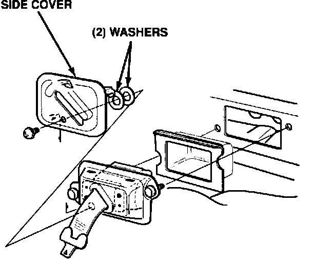

Front Lap Belts - Slow to Retract
90acura01YEAR MODEL VIN APPLICATION
1990 INTEGRA SEE VEHICLES
AFFECTED
April 30, 1990
BULLETIN NO.
90-008
Lap Belt Retracts Slowly
SYMPTOM
The front lap belts are slow to retract.
VEHICLES AFFECTED
3-dr. up to DA911373 4-dr. up to DB106873

CORRECTIVE ACTION
Space the driverand passenger side covers away from the seat belt assemblies, using the washers listed under PARTS INFORMATION.
1. Slide the front seats completely forward.
2. Remove the screw securing the side cover. Gently pull out the bottom of the cover, then pull upwards to release the retaining tabs.
3. Glue the two 4 mm washers to the back of the side cover as shown, then reinstall the cover.
4. Repeat steps 1-3 to the remaining lap belt.
PARTS INFORMATION
Washer, 4 mm: P/N 94101-04800, H/C 0331462 (Order four of them)
WARRANTY CLAIM INFORMATION
In warranty: The normal warranty applies. Proper operation of seat belts comes within the Acura lifetime warranty, therefore these repairs are never out-of-warranty.
Operation Number: 854050
Flat rate time: 0.4 hour (for both sides)
Failed part: 818A0-SK7-A23ZA
Defect code: 030
Contention code: 899